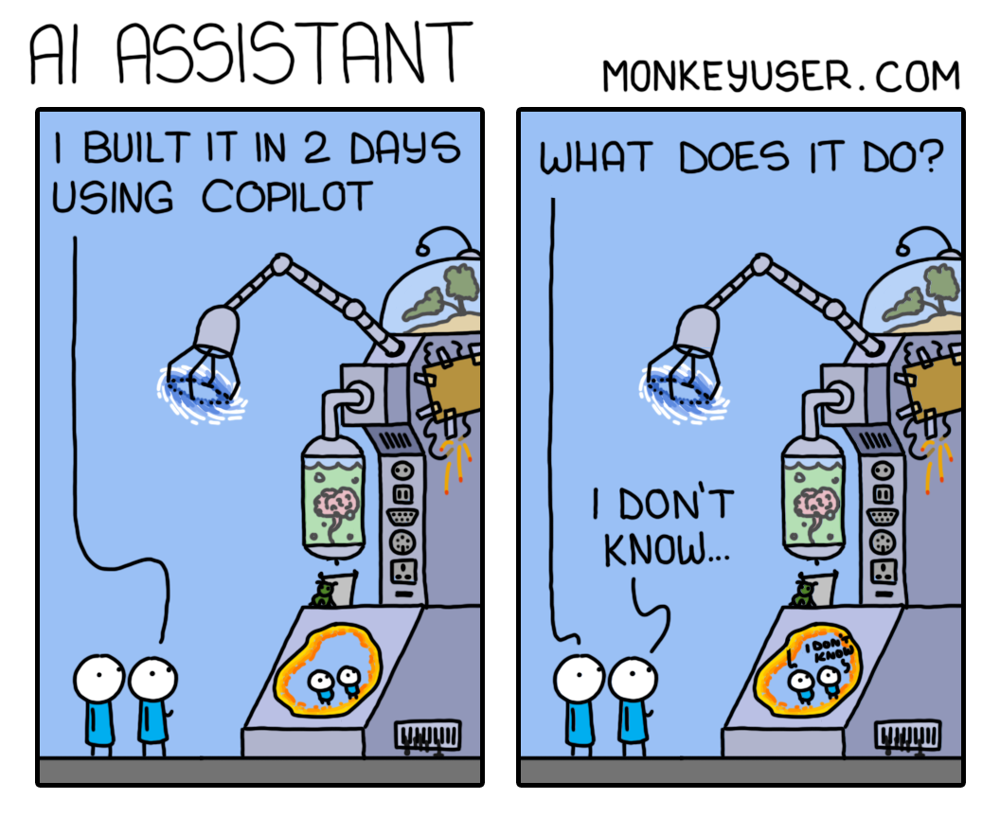

A branch of Computer Science that has raised debate in schools, workplaces, companies, etc. is Artificial Intelligence (AI). AI systems perform tasks that mimic human behaviors such as language translation, image recognition, and delivering reproduced content and knowledge. Many of these tasks would have needed reasoning, learning, problem-solving, and creativity.
A popular subset of generative AI systems are Large Language Models (LLMS), foundation models that are trained on a large dataset to learn knowledge to be applied for a specific purpose. The model finds relationships and patterns on the data it is trained on. OpenAI, an artificial intelligence research and deployment company, came out with Generative Pre-trained Transformers (GPT) that does the learning that powers their ChatGPT3.5 and ChatGPT4.0. Other well-known applications include Google Bard, Bing Chat, Phind, Github Copilot, and more. Updated versions have subsequently been released for each version, based on newer web content, books, Wikipedia articles, news articles, social media posts, code snippets, and more.
ChatGPT is my go-to generative AI tool and the only one I have used. Personally, many of my classes condone using AI to complete assignments because it is seen akin to cheating. Students are rather encouraged to produce original content and truly show comprehension of the material. Using free, mostly-accurate tools like ChatGPT can put you at risk for plagiarism or various academic consequences. I find it hard to believe that most students would actually have enough self-discipline to not use ChatGPT. The internet is readily at our fingertips.
While taking ICS 314 (Software Engineering) at UH Mānoa, the use of generative AI seems to stand in a middle ground. While we are encouraged to watch solutions to coding exercises and try to do them separately on our own, we are not necessarily penalized for generative AI either. When the time came to submit these exercises, we were required to declare whether we used the help of generative AI or not. Although it ultimately had no bearing on our grade, it was easy to say you did not. In my opinion, coming to terms that the academic landscape is using ChatGPT is crucial. We have to face a new reality that AI is here to stay in education, and we must find the best ways to use it.
I did not use ChatGPT for the Experience WODs, which were coding exercises completed at home. Video solutions are provided and we actually were encouraged to repeat these experiences multiple times to make sure we fully understood the concept. Otherwise it would have avoided the purpose of them in the first place.
Similar to the Experience WODs, I was not motivated to use ChatGPT for this. I embraced being stuck since we were able to work with group members and spend the entire class period. There was no penalty on our grade for not being able to find the solution, because it was just practice.
I did not use ChatGPT for the in-class WODs as I found that the weekly practice sessions held by the TAs and the online documentations were helpful. We also were not penalized for using the internet, so I had past projects as examples when I got stuck. The solutions from practice exercises for this class were more helpful than ChatGPT responses.
I never attempted to use AI in writing my essays or for ideas, in caution of plagiarism. Writing my essays in a typing software like Microsoft Word or Google Docs catches a good number of errors before I post them to GitHub.
Since we were participating in the Hawai‘i Annual Coding Challenge this semester (HACC), we decided to create an optimized version of the UH Ask Us Site and carry it on as our final project. I gave an example later in this essay of how I used ChatGPT. Since we used other technologies such as Pinecone and OpenAI that were not covered in the ICS 314 modules, we dedicated a lot of our time researching. This time constraint led us to try troubleshooting using ChatGPT, by simply copying and pasting the error in. Without it, we would not have progressed as far in our final project.
For example, I wanted to a theme to our project site but the online documentation was unclear. I gave ChatGPT this:
build
Logging at level: debug Configuration file: /github/workspace/./_config.yml Theme: jekyll-time-machine github-pages 228 | Error: The jekyll-time-machine theme could not be found.
and it responded:
It looks like you're trying to build a Jekyll site, but you're encountering an error because the jekyll-time-machine theme could not be found. This could be due to several reasons:
Theme is not installed: Make sure that the theme you are trying to use is installed. If it's a gem-based theme, you can add it to your Gemfile and run bundle install.
Typo in the theme name: Check for any typos in the theme name in your _config.yml file. It should match the theme's name exactly as it is.
Incorrect configuration: Ensure that the theme is correctly configured in your _config.yml file. The line should be theme: jekyll-time-machine.
Theme is not supported by GitHub Pages: If you're using GitHub Pages, note that it only supports certain themes directly. If jekyll-time-machine is not one of them, you'll need to use a different method, like committing the theme's files directly to your repository.
Here's what you can do:
If the theme is a custom one or not supported by GitHub Pages, consider adding the theme's files directly to your project.
If it is a gem-based theme, make sure it is included in your Gemfile and run bundle install.
Double-check the theme's documentation for installation and configuration instructions.
If you're developing locally, try running bundle exec jekyll serve after installation to see if the theme is applied correctly.
I thought that the videos provided within the modules for ICS 314 were detailed enough for what we needed to know. I would copy and paste lines of code as they were and prompt it to explain it. It is helpful, but I try to avoid it. Practicing without looking at the solution helps the concept stick better for me.
I don’t use AI here, since I feel tools like ChatGPT should be used under your own discretion. Important details may not always be accurate. Besides the risk of misinformation, anyone can use ChatGPT anyways. Insights from your personal experience, opinions on topics, etc. cannot be replicated by AI and can sometimes be more insightful and maximize the limited face-to-face time we have.
Similar to above, I have never asked or answered a smart question before with AI. I thought that smart-questions are already formulated to be answered by others, and everyone in the Discord channel is quick and helpful. I liked that the answers questions we ask in a Discord channel can be seen by everyone, overall improving the class experience.
I have asked ChatGPT to give an example of the arrow function in JavaScript. It gave this simple example and a sentence or two on how it worked:
// Traditional function expression
const add = function(a, b) {
return a + b;
};
// Arrow function equivalent
const addArrow = (a, b) => a + b;
I rarely use AI for coding examples, because the online documentation provides similar ones.
As mentioned earlier, AI tools like ChatGPT is great for explaining code. ChatGPT can take multiple lines of code at once and analyze each one. This class taught us a lot through the project templates so being able to read code is just as important as knowing how to write it. I did this for a lot of the “boilerplate” code that we just had to accept and know.
I have used ChatGPT especially for code that dealt with the user-interface of our final project, which will be talked about in the “Practical Applications” section.
I have not tried to use AI for documenting code, as I feel we have more hands-on work with our projects to create our own descriptive and personalized documentation.
Sometimes the suggestions for ESLint errors in the IntelliJ IDE take some time to pop up or were incomprehensible. Around the first time we were getting familiar with the meteor-react-template, I had a particular error that I spent days trying to figure out, so I prompted ChatGPT with my problem in the terminal:
what does this mean Initialization error (ESLint). require(...).pathToFileURL is not a function
TypeError: require(...).pathToFileURL is not a function
at Object.<anonymous> (/Users/michelleuy/Desktop/github/islandsnow-meteor/app/node_modules/@eslint/eslintrc/dist/eslintrc.cjs:2395:55)
at Module._compile (internal/modules/cjs/loader.js:678:30)
at Object.Module._extensions..js (internal/modules/cjs/loader.js:689:10)
at Module.load (internal/modules/cjs/loader.js:589:32)
at tryModuleLoad (internal/modules/cjs/loader.js:528:12)
at Function.Module._load (internal/modules/cjs/loader.js:520:3)
at Module.require (internal/modules/cjs/loader.js:626:17)
at require (internal/modules/cjs/helpers.js:20:18)
at Object.<anonymous> (/Users/michelleuy/Desktop/github/islandsnow-meteor/app/node_modules/eslint/lib/cli-engine/cli-engine.js:33:5)
at Module._compile (internal/modules/cjs/loader.js:678:30)
Process finished with exit code -1
It gave me helpful starting points to look at such as to check the ESLint Version, Update Dependencies, Check Configuration Files, Check the Node.js Version, to reinstall ESLint, and even seek help if all else fails. It took a lot of time and trial for each suggestion it had. Many attempts later this still didn’t help, so I asked in the #smart_questions channel in the ICS 314 Discord, and within minutes someone who experienced the same thing responded and I had to configure the Node.js version in IntelliJ specifically, which was not mentioned at all by ChatGPT.
I have no other uses other than the ones listed, mostly since I see currently see ChatGPT as a coding companion. While some of its paragraph-like explanations are questionable, code given can be tested by actually running it yourself.
I believe that ChatGPT was a great tool to get an entry way into learning basic, introductory topics. Depending on how specific your prompt may be, it does a fair job at summarizing or expanding topics. Lecture/reading material for ICS 314 heavily depended on around 30-minute videos, which generally covered what we needed to know. My use of ChatGPT focused on the conversation feature, where I would ask more specific follow up questions. The answers it provided filled in the learning gap from what was covered in the videos. I wouldn’t say that ChatGPT can replace textbooks, official documentation sites, or verified sources that an instructor can provide.
For the Hawaii Annual Coding Challenge (HACC), a local group coding competition, we challenged ourselves to use OpenAI as a foundation for our application. It uses keys for security and while trying to understand this I asked it:
How to set the organization key in the terminal?
This was its response:
"As of my last knowledge update in January 2022, OpenAI did not provide a specific "organization key" separate from the API key for individual users. Instead, API keys were used to authenticate API requests, and any organization-specific settings or permissions were typically managed through the OpenAI dashboard."
Which is understandable because there was an article that came out a week ago from the time of writing this essay, that actually discusses setting the organization key in the terminal. As warned on its user-interface, the information that ChatGPT provides can often be misleading. APIs are always evolving. In terms of software engineering practices, proper research on the documentation of libraries and frameworks you are using is important.
I asked Chat GPT to make a light mode and dark mode in which it suggested I use CSS classes and to !important to override certain rules. I did not find this helpful because it did not promote readability if one of my group members were to edit the code. While it certainly worked, I found myself fine tuning whatever it gave me to make sense as if I were producing it myself.
ChatGPT has unexpectedly taught me a new, different skill of how to ask questions to get the answer I want. Over time you realize that the AI only outputs as much information as you give. I found that it would unnecessarily paraphrase prompts given with extra “fluff”. For example if you were to give a single code of line and ask it what the problem is, it won’t give a helpful answer because it simply would not know what the rest of your code is.
In the realm of software engineering, knowing how to ask smart questions is a quintessential aspect to learning. Help from humans through forums such as Stack Overflow, Discord, etc. can be extremely helpful—especially if they had the same experience. If your issue is unique, you get left with general steps to take. However, ChatGPT can be treated as a personal coding companion that can give you specific code snippets to try,
At some points, generative AI took away valuable moments of frustration from being stuck or catching up on new material by giving away full answers in seconds. By being inefficient on more complex problems, I probably spent more time fixing that prompt than tracing the code to see what was up. ChatGPT is a great way to start or find a small fix. However we can’t fully rely on it yet for important projects.
Incorporating generative AI tools like ChatGPT into a Software Engineering class like ICS 314 is promising for students looking into a more hands-on experience. Since ChatGPT can be accessed on any browser, it makes learning accessible. It is a small remedy for anyone who feels that in-person lectures or textbook problems are inefficient.
Another major factor to learning in Software Engineering is feedback and critique. In ICS 314, we constantly receive feedback, for example about our Project Boards on GitHub or not being descriptive enough in essays. Instructor and Teaching Assistant (TA) feedback response times may vary from a day to a week. However ChatGPT can respond in a matter of seconds. Both are helpful and effective in their own ways. ChatGPT gives “cookie-cutter” responses that can easily be reproduced, while our instructors give more personalized feedback. They may recognize patterns in your work and areas you improved in overtime, which is a skill that only human intelligence is capable of so far. ChatGPT works off the current chat and what you feed it.
ChatGPT can’t fully execute our assignments just yet. But it can teach us one of the most important skills of being a Software Engineer–how to ask smart questions. I wrote an essay about the benefits of asking them and examples. They are essentially specific, solution-oriented, and unique questions about parts of code we are stuck on. These are asked on forums and communities, such as Stack Overflow.
If students can master this skill of knowing how to ask the right question, then using ChatGPT is a no-brainer. It will be a huge role in future Computer Science related assignments. The more detailed input you give, the better the ChatGPT response. There’s no one stopping you from copying and pasting the entire assignment instructions page either. The downside to this is that real, human programmers would not respond to questions like this that are extremely long. They might misinterpret it as you asking them to do the assignment for you. Software Engineering roles in the real world will test you on how to deal with peers, rather than how well you can feed a generative AI program.
The technology realm is evolving as you are reading this essay. Specific, clear education about using generative AI (like ChatGPT) for Computer Science assignments would be highly valuable. There is no doubt that it is a highly personalized learning tool. However like knowing how to ask smart questions, students should be explicitly informed upon which part of the Software Engineering Process that ChatGPT would be best for. It’s a tool that can build too much if supplied too much.